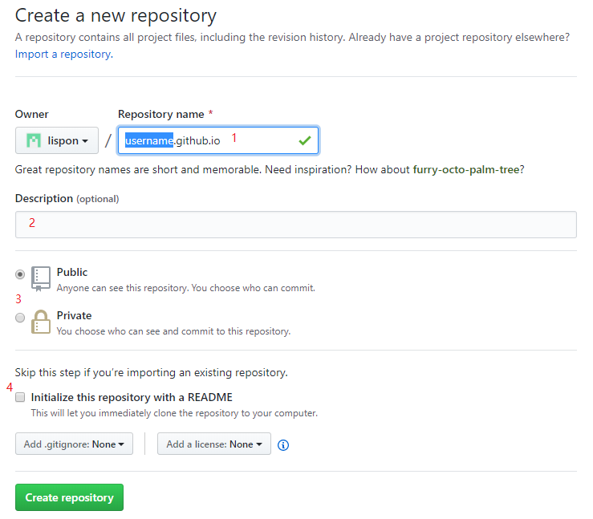
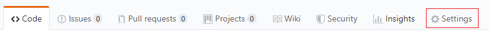
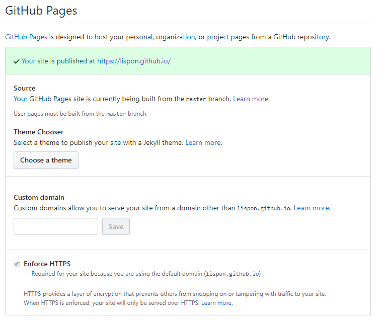

使用Github pages + sphinx搭建博客¶
创建时间: 20191029
使用的工具:
github账户
git
vscode
vscode中安装reStructuredText插件
vscode中安装python插件
python 3
安装sphinx
安装doc8
一. 在Github 中新建存储库, 并配置Github Pages¶
1. 新建存储库¶
如下图所示, 新建存储库, 存储库的名称为”username.github.io”, 其中, username为Github账号的名称, 这里我的账户名称为lispon. 为了方便, 最好勾选图中的**4**, 这样会自动生成README.md文件.
注意: 这里即使设置为Private, 搭建的博客仍然可以被访问.
2. 配置Github Pages¶
如下图所示, 点击Settings; 向下找到Github Pages.
如果新建的存储库的名称正好符合**username.github.io**的格式, 那么无法选择Source, 如下图示, 同时, 可以直接通过**https://username.github.io**来访问, 否则, 必须要通过*https://username.github.io/<存储库名称>**来访问.
否则, 会出现选择Source的下拉列表, 如下图所示. 最好是选择第二项**master branch /docs older**, 如果存储库中没有docs文件夹, 该项灰显, 无法选中.

注意: 虽然, 没有出现选择Source的下拉列表, 但是仍然能够实现在master branch/docs floder中放置静态html网页文件.
3. 克隆存储库到本地, 修改.¶
使用Git命令添加docs文件夹, 并设置Github Pages Source为master branch/docs folder
如果docs文件夹中为空, 那么Git会忽略该文件, 无法添加到存储库中, 那么可以新建 txt文件, 重命名为”.nojekyll”, 然后提交. .nojekyll文件是让Github查 找提供的index.html文件作为博客主页, 否则, Github会根据存储库下根目录下的 README.md自动转化成html并作为博客主页(在存储库中不存在README.md转化成的html文件).
4. 实际效果¶
将静态html文件添加到该存储库下的docs文件夹内, 然后访问https://username.gihtub.io, 可以看到效果, 默认主页是index.html文件.
可以访问 https://lispon.github.io 查看效果.
或者访问 https://github.com/lispon/lispon.github.io 查看源码.
二. 在本地使用sphinx + restructure来编写博客¶
未完待续